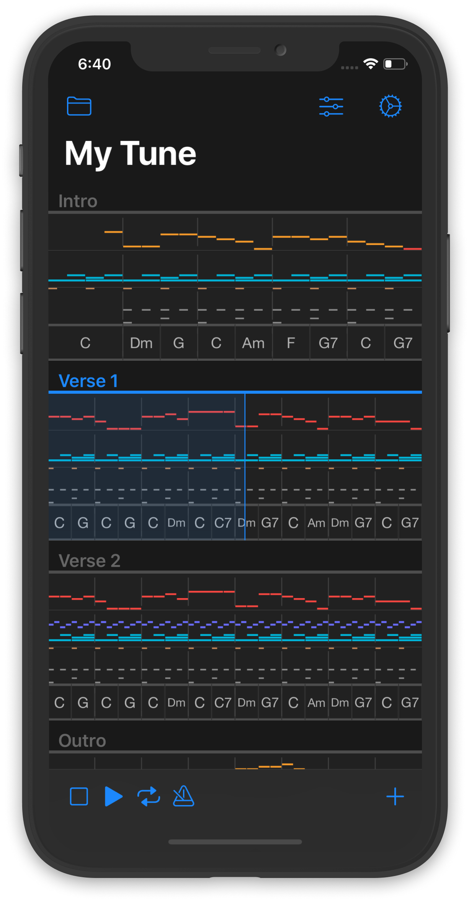

Your
Music Composition Lab
Composing music can be much simpler if your workflow and toolset help you focus on the essential things. Tune Maker teaches you the fundamental ingredients of music and gives you all necessary tools to perform your tune-making experiments.
